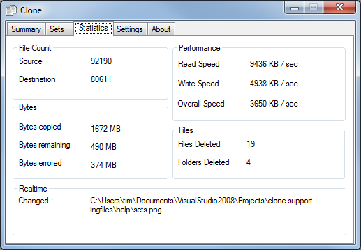

Statistics Tab

This screen shows general information on how clone is operating. The statistics are just displayed for the most recent backup and will be overwritten when the next backup proceeds.
File Count
This shows the number of files initially in the source and destination
Bytes
- Bytes copied The number of bytes (units displayed) copied from the source folder into the destination folder.
- Bytes remaining The number of bytes (units displayed) that are still oustanding in the current backup.
- Bytes errored The number of bytes (units displayed) that could not be copied in the current backup.
Performance
- Read Speed The rate at which bytes are read from the source folder.
- Write Speed The rate at which bytes are written to the destination folder. Note that some operating systems "cache" file data in memory and only write this to the physical media at a later stage determined by the operating system. If this is the case then this rate may appear to be quicker than the actual rate.
- Overall Speed The rate at which bytes are transferred from a source folder to a destination folder. In the screen shot given bytes are being transferred at a rate of 3650 KB every sec.
Files
This shows the number of files and folders deleted. These statistics are cumulative and not just for the most recent backup.
Realtime
This shows the file name of the latest file change detected by the "Realtime" settings. This file will be copied to the destination folder immediately.
|